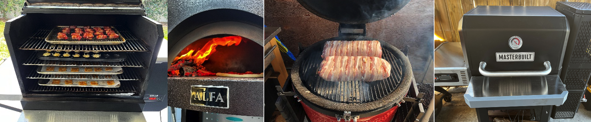

An Outdoor Chef.
I am a Chef that specializes in outdoor cooking. My grills of choice are: Myron Mixon BARQ 2400, ALFA Nano/One Pizza oven, Kamado Joe: Junior, Kettle Joe, Pellet Joe, Classic 3, Big Joe 2. In addition, I have a Masterbuilt Gravity Feed 800. Anything that can be cooked or baked indoors can be prepared outdoors using the same principles.